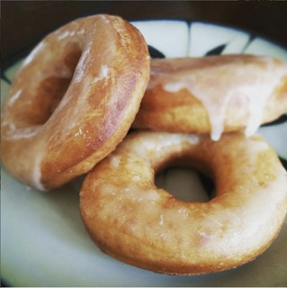

Doughnuts

Donuts or Doughnuts?
Is it donuts or doughtnuts? does anyone really have a correct answer? I would argue that it is infact DOUGHnuts. They are made of dough, they're absolutely not DOnuts, what the hell are they doing? The only things that doughnuts really accomplish is slowly fatten you up to send you to an early grave. Anyway, here is the recipe. Enjoy!
Ingredients
- 2 (.25 ounce) envelopes active dry yeast
- 1/4 cup warm water (105 to 115 degrees)
- 1 1/2 cups lukewarm milk
- 1/2 cup white sugar
- 1 tsp salt
- 2 eggs
- 1/3 cup shortening
- 5 cups all purpose flour
- 1 quart vegetable oil
- 1/3 cup butter
- 2 cups confectioners sugar
- 1 1/2 teaspoons vanilla extract
- 4 tablespoons hot water
Directions
- Sprinkle the yeast over the warm water, and let stand for 5 minutes, or until foamy.
- In a large bowl, mix together the yeast mixture, milk, sugar, salt, eggs, shortening, and 2 cups of the flour. Mix for a few minutes at low speed, or stirring with a wooden spoon. Beat in remaining flour 1/2 cup at a time, until the dough no longer sticks to the bowl. Knead for about 5 minutes, or until smooth and elastic. Place the dough into a greased bowl, and cover. Set in a warm place to rise until double. Dough is ready if you touch it, and the indention remains.
- Turn the dough out onto a floured surface, and gently roll out to 1/2 inch thickness. Cut with a floured doughnut cutter. Let doughnuts sit out to rise again until double. Cover loosely with a cloth.
- Melt butter in a saucepan over medium heat. Stir in confectioners' sugar and vanilla until smooth. Remove from heat, and stir in hot water one tablespoon at a time until the icing is somewhat thin, but not watery. Set aside.
- Heat oil in a deep-fryer or large heavy skillet to 350 degrees F (175 degrees C). Slide doughnuts into the hot oil using a wide spatula. Turn doughnuts over as they rise to the surface. Fry doughnuts on each side until golden brown. Remove from hot oil, to drain on a wire rack. Dip doughnuts into the glaze while still hot, and set onto wire racks to drain off excess. Keep a cookie sheet or tray under racks for easier clean up.
Home